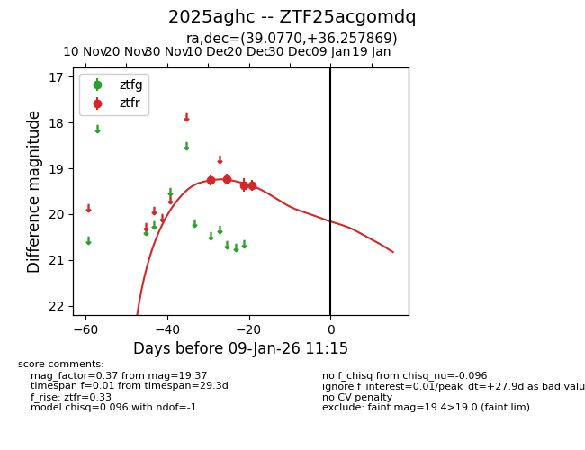
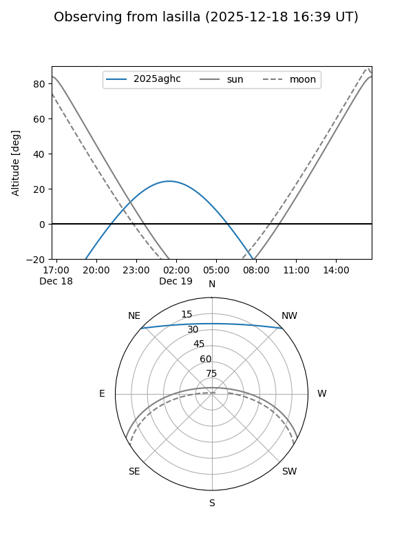
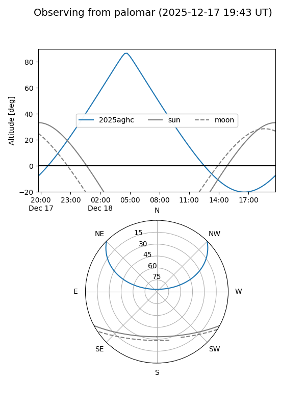

2025aghc
Target 2025aghc at 2025-12-18 11:18
Aliases and brokers:
FINK: fink-portal.org/ZTF25acgomdq
Lasair: lasair-ztf.lsst.ac.uk/objects/ZTF25acgomdq
ALeRCE: alerce.online/object/ZTF25acgomdq
TNS: wis-tns.org/object/2025aghc
YSE: ziggy.ucolick.org/yse/transient_detail/2025aghc
alt names
ZTF25acgomdq (ztf,fink_ztf)
2025aghc (tns,yse)
Coordinates:
equatorial (ra, dec) = 39.0770,+36.25787
equatorial (HMS+DMS) = 02:36:18.49,+36:15:28.33
galactic (l, b) = (145.5220,-21.97151)
Photometry
last ztfr=19.23
2 ztfr detections
Lightcurve

Visibility


Additional plots